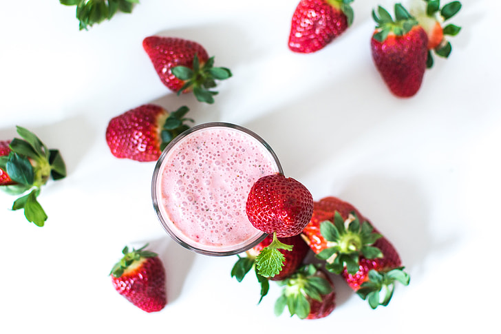

Tropical Sunrise Smoothie on raikas ja herkullinen sekoitus trooppisia makuja, jotka herättävät makunystyräsi eloon aamulla tai virkistävät iltapäivän välipalana. Tässä smoothiessa yhdistyy makea mansikka, happaman makea kiivi ja mehukas appelsiini, jotka luovat keskenään täydellisen tasapainon. Smoothien koostumus on samettinen ja täyteläinen, joten se tyydyttää nälän tunteen ja antaa sinulle energiaa päivän haasteisiin. Nauti tästä aurinkoisesta smoothiesta milloin tahansa ja tunne kuinka trooppiset maut vievät sinut hetkeksi paratiisimaisiin tunnelmiin! Tästä reseptistä riittää neljälle nauttijalle.
| 4 kpl | appelsiinia |
| 4 kpl | kiiviä |
| 6 dl | pakastettuja suomalaisia mansikoita |
| 300 g | kreikkalaista jogurttia |
Valmista tuli! Kaada smoothie korkeaan lasiin ja tarjoile se sellaisenaan. Vaihtoehtoisesti voit vaikka koristella pinnan tuoreilla marjoilla ja hedelmillä tai lisätä sekaan pienen nokareen vaniljajäätelöä.